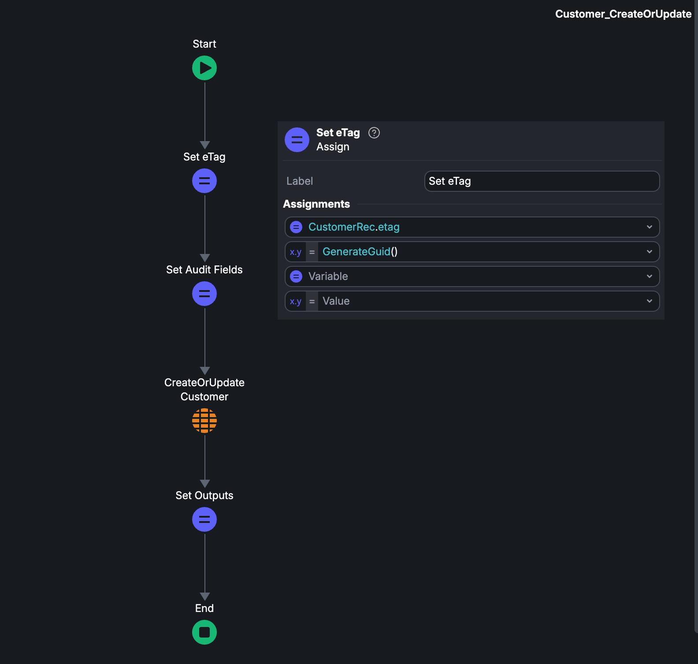
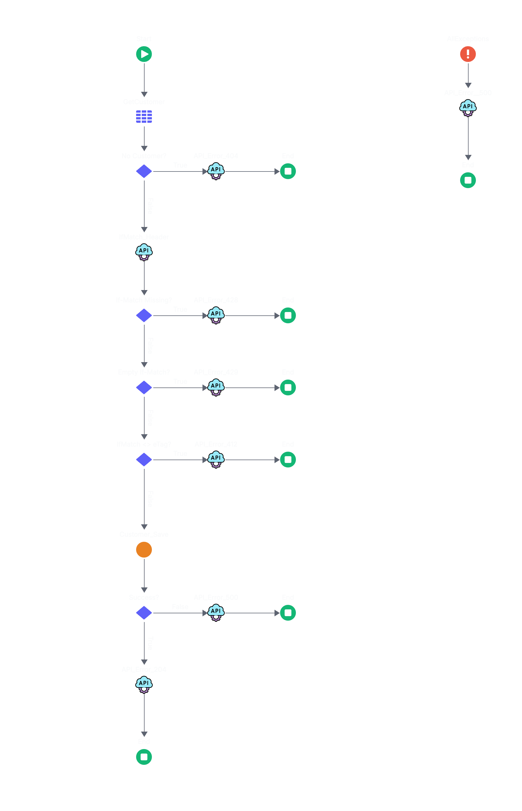

Every time a browser re-fetches a page it hasn't seen change, or two people edit the same record at once, there's a version-tracking problem underneath. e-Tags (Entity Tags) are the small HTTP header that solves both — one string that lets a server say "this is exactly which version of the resource you're looking at."
What are e-Tags?
An e-Tag is a unique identifier tied to a specific version of a web resource. Its job is simple: let a client ask the server "has this changed since I last saw it?" without sending or receiving the full resource again.
Structurally it's just a quoted string — often a hash of the content — such as "686897696a7c876b7e". Browsers and servers use it for two related things: optimizing caching, and managing concurrent updates.
Why e-Tags matter
- Performance — only changed resources get re-fetched, cutting bandwidth and server load.
- Smoother UX — faster loads mean more responsive interactions.
- Concurrency control — e-Tags help prevent one update from silently overwriting another.
- Lower data costs — fewer redundant downloads matter most on mobile or bandwidth-limited connections.
How e-Tags work in webpage caching
Browsers cache resources locally to avoid re-fetching them on every visit; servers cache responses to avoid regenerating them on every request. e-Tags are the version stamp that ties the two together — they let both sides agree on whether a cached copy is still valid.
The request/response cycle
- Initial request — the server responds with the content and an
ETagheader. - Subsequent requests — the browser sends that e-Tag back in an
If-None-Matchheader, asking "is this still current?" - Server validation — if the content is unchanged, the server replies
304 Not Modifiedwith no body, saving bandwidth. If it changed, it sends the updated content with a new e-Tag.
Strong vs weak e-Tags
| Type | Meaning | Example |
|---|---|---|
| Strong | Byte-for-byte match required; use when any change matters | ETag: "686897696a7c876b7e" |
| Weak | "Close enough" match — minor/metadata changes don't invalidate it | ETag: W/"686897696a7c876b7e" |
Seeing it in practice
A plain request against a public endpoint shows the server issuing an e-Tag:
$ curl -I https://jsonplaceholder.typicode.com/posts/1
HTTP/2 200
content-type: application/json; charset=utf-8
cache-control: max-age=43200
etag: W/"124-yiKdLzqO5gfBrJFrcdJ8Yq0LGnU"Sending that e-Tag back in If-None-Match lets the server confirm nothing changed, returning 304 with no body:
$ curl -I -H 'If-None-Match: W/"124-yiKdLzqO5gfBrJFrcdJ8Yq0LGnU"' \
https://jsonplaceholder.typicode.com/posts/1
HTTP/2 304
etag: W/"124-yiKdLzqO5gfBrJFrcdJ8Yq0LGnU"Send a different (stale) e-Tag, and the server treats it as a mismatch — it returns 200 with the full body and the current e-Tag again, exactly as if no e-Tag had been sent at all.
Using e-Tags for optimistic concurrency control
Caching is only half the story. The same version-stamping idea also solves a very different problem: two clients editing the same resource at once.
The problem
Picture a collaborative app or an inventory system where two clients read the same record, each make an edit, and both write back. Without any version check, whichever write lands last simply overwrites the other — silently.
Client 1 ──┐
│ PUT /record/123
▼
┌───────────┐
│ HTTP API │────────▶ DB
└───────────┘
▲
│ PUT /record/123
Client 2 ──┘
No version check ⇒ whichever request lands
last silently overwrites the other's write.The fix: If-Match
e-Tags give clients a way to say "only apply my update if the resource is still at the version I read." The client sends the e-Tag it read back in an If-Match header on the write request. The server compares it against the resource's current e-Tag:
- If they match, the write goes through and the server issues a new e-Tag for the new version.
- If they don't match, the resource changed underneath the client — the server rejects the write with
412 Precondition Failedinstead of silently overwriting.
Client 1 ──┐ If-Match: "v1"
▼
┌───────────┐
│ HTTP API │
└───────────┘
│ │
match│ │mismatch
▼ ▼
200 OK 412 Precondition Failed
ETag "v2" (resource is already "v2")
▲
│ If-Match: "v1"
Client 2 ──┘This pattern is called optimistic concurrency control — optimistic because it doesn't lock the resource up front; it just checks at write time and rejects the loser of the race, leaving that client to re-fetch and retry.
Implementing it in OutSystems
The pattern maps cleanly onto a typical OutSystems REST API: a PUT action reads the If-Match header, compares it against the stored e-Tag on the record, and only proceeds if they match.
ServerAction: UpdateRecord_PUT
Inputs: RecordId (Text), IfMatchHeader (Text), NewValues (Record)
Outputs: HttpStatus (Integer), UpdatedRecord (Record)
1. Record = GetRecordById(RecordId)
2. If Record is null:
Return HttpStatus = 404
3. If IfMatchHeader is empty:
Return HttpStatus = 428 ' Precondition Required
4. If IfMatchHeader <> Record.ETag:
Return HttpStatus = 412 ' Precondition Failed
5. Record.Values = NewValues
Record.ETag = GenerateGuid()
6. SaveRecord(Record)
7. Return HttpStatus = 200, UpdatedRecord = Record

The key details: the e-Tag lives as a field on the record itself, it gets regenerated on every successful write, and the comparison happens before any business logic runs — so a stale write never reaches the database.
Benefits of e-Tags
- Improves caching efficiency — only modified resources are reloaded.
- Optimizes server resources — avoids redundant data transfers and reprocessing.
- Supports concurrency control — prevents silent overwrites in multi-user environments.
- Data consistency — cached data stays accurate and up to date.
Limitations of e-Tags
- Server overhead — generating and validating e-Tags adds load, especially for dynamic content.
- Scalability — managing e-Tags efficiently across many resources gets harder at high traffic.
- Inconsistent weak e-Tag support — some browsers and caches don't fully honor weak e-Tags.
- Implementation complexity — both server and client need extra logic to generate, send, and check them correctly.
Closing thoughts
e-Tags solve two problems with one mechanism: they tell a cache when it can skip a re-fetch, and they tell a write when it's about to clobber someone else's change. Both come down to the same question — "is this still the version I think it is?" Once that clicks, deciding where to add e-Tags to your own APIs becomes a lot more obvious: any resource that's read often, or written by more than one client, is a candidate.